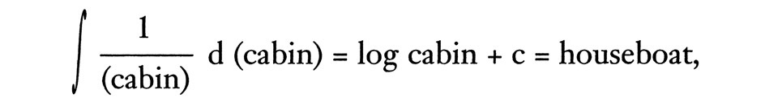

Круглая Радуга
3.
В Зоне
В отсутствие людей, интерьер сталисто сер. Переполненным, он зелен, спокойный кислотно-зелёный. Солнечный свет попадает через иллюминаторы в переборках повыше (у этого Rücksichtslos постоянный крен в 23° 27′), и шеренга стальных смывных бачков тянется внизу вдоль переборки. В конце каждого сортирного под-отсека кофейные автоматы и кинетоскопы с прокруткой вручную. Ты видишь всех поистрёпанных, не таких роскошных женщин не-Тевтонсокого склада в машинах для рядового состава. Понастоящему крутые и расово более золотистые тёлки достаются офицерам, natürlich. В этом часть того Нацистского фанатизма.
Сам по себе Rücksichtslos продукт фанатизма иного рода: специализирующего. Этот корабль один из Сортиросудов, триумфа Германской мании к подраспределению. «Если дом органичен»,– доказывали на заре Сортиросудостроения его пронырливые сторонники,– «с живущей в нём семьёй, то и семья органична, а дом отчётливо-считываемый знак, понимаете»,– за их тёмными стёклами и под их серыми короткими стрижками, не веря ни единому слову этой белиберды, полны Макиавелианизма и молодости, пока ещё не окончательно созревшие для паранойи,– «а с наличием у дома туалетной части—дом-сплошь-органика! ха-хах!»,– напевно, с укором, выговаривают широкому блодинисто-лицему инженеру, тот, под прямым пробором в зализанных вверх волосах, заметно краснеет, потупившись на свои колени, среди добродушно улыбчивых зубов своих однокашников по технологии, потому что он чуть было не забыл эту деталь (Альберт Шпеер, собственной персоной, в сером костюме с пятном от мела на рукаве, в самом конце, подбоченясь опирается о стену, замечательно похожий на Американского ковбойного актёра Генри Фонда, давно забыл, что дом органичен и никто ему не укажет, ДДП). Таким образом, Сортиросудну в Kriegsmarine отводится та же роль, что и туалету в доме. Потому что Военно-морской флот органичен, мы все знаем это». [Генерал, а может Адмирал, смех.] Rücksichtslos должен был стать флагманом целой эскадры Сортиросудов. Но квоты целиком перенаправились от Флота на ракетную программу А4. Да, это может показаться странным, но Дегенколб тогда возглавлял уже Ракетный Комитет, не забывайте, и располагал как властью, так и желанием отстригать со всех служебных отраслей. Так что Rücksichtslos, единственный-в-своём-роде, к сведению заядлых коллекционеров военных кораблей и, если вы активны на рынке, вам лучше поспешить, потому что Джи-Эл уже посетили с осмотром. Повезло, что не достался Большевикам, а, Чарльз? Чарльз, тем временем, строчит в своём широком блокноте, со стороны сосредоточенные заметки, но на самом деле описание текущей сцены, типа, Они все уставились на меня или Лейтенант Ринзо замышляет меня убить, и конечно же неувядаемые Он тоже один из них и Я его кончу однажды ночью, ну, а тем временем коллега этого Чарльза, Стив, забыл про Русских и прервал свою презентацию сливного клапана с тем, чтобы всерьёз присмотреться к этому Чарльзу, ты не можешь выбирать себе исследовательскую группу, нет, если ты только что из школы и вот он я в жопе посреди хрен знает чего, не больше чем мальчик на побегушках тут—что он вообще такое, может педик? Что я такое? Что нужно Джи-Эл, чтоб я был тут? Это некая неясная мера наказания в компании, даже вплоть до, Боже правый, вечной ссылки? Я простой сотрудник, они могут продержать меня тут 20 лет, если захотят, и д-никто и не узнает, просто будут списывать на накладные расходы. Шейла! Как я скажу Шейле? Мы обручены. Вот её фото (волосы волнами бурного моря спадают в стиле Риты Хейворт, глаза, будь этот снимком цветным, смотрели бы из-под жёлтых век с розовыми краями, и рот как вспоротый хот-дог с рекламного щита). Прокати её в Баффало Плавни
Старый комарище в плавнях
Голову сунул ей под платье, в самые лохмы,
С улыбкой противной и плавной,
Выжить непросто в Баффало Плавнях,
Эй, Москит,
Закрой-ка свои глазки ты:
Йа та, йа та-та, йа та-та, тата
Ты прикинь какая хохма,
Ивв-месте!
О, сам знаешь, когда ты молод и цел [«Ивв-месте» в данном случае груз Сортиросудна из смышлёных молодцов в роговой оправе и в до колен шнурованных ботинках, они из Шенектади и подпевают этому вот речитативу] и ведь хорошая девонька, в церковь ходит, поди не опечалься после такой групповухи от банды Техасских москитов, такое может шибануть тебя вспять лет на 20. Подумай, бывают же парни, совсем как ты, бродят вокруг, может ты даже сталкивался с каким-то из них сегодня на улице и не подумал даже, с сознанием младенца, только потому что эти москиты дорвались таки до него и сделали своё неудобосказуемое дело. А мы посыпа́ли инсектицидами, а и бомбили плавни цитронеллой, и это неправильно, ребята. Они плодятся быстрее, чем мы успеваем их грохнуть, и нам остаётся только поджать хвост и пусть как себе хочут в Баффало Плавнях, где моя девушка Шейла вынуждена смотреть на бесчинства этих—нелюдей, и мы допустим, чтоб они существовали даже?
Эй, Москит,
Закрой-ка свои глазки ты,
Хабба, хабба—
Эй, Москит,
Закрой-ка свои глазки ты!
Ну, на этом месте просто не можешь не задуматься кто на самом деле больший параноик из двоих. У Стива, ясное дело, немало жёлчных наветов на Чарльза, таким образом. Среди разбитных надписей от залётных математиков  уж до того ушлых, они уходят не спеша прочь вдоль узкого колбасовидного сортира сейчас, два молодых/старых человека, их ступни тают и перестают вызванивать по наклонной стали палубы, фигуры их становятся всё прозрачнее, в удалении, пока и вовсе уже невозможно их разглядеть. Только пустой отсек остался, S-образные спицы кинетоскопов, ряды зеркал лицом к лицу, отражают друг друга, раму за рамой, вдоль всей кривой очень большого радиуса. Всё снаружи, до конца кривой включающей данный сегмент, считается пространством Rücksichtslos. Что делает корабль довольно жирным. С причитающейся ему полосой отчуждения. «Моральный облик команды»,– шептали лисьи морды на заседаниях Министерства,– «моряцкие предрассудки. Зеркала посреди полночи. Уж мы-то в курсе, не так ли?»
Офицерские сортиры, по контрасту, отделаны красным бархатом. Декор из Инструктажа по Безопасности 1930-х. То есть, по всем стенам, фотограффити, картины Жутких Катастроф из Истории Германского Флота. Столкновения, взрывы артиллерийских погребов, тонущие подлодки, самое оно, если ты офицер, которому нужно срочно просраться. Уж тут эти Лисяры постарались. У Старших офицеров целые номера, отдельные души или втопленные ванны, маникюрщица (волонтёрки из ЛГД, в основном), парная, массажный стол. В виде компенсации, все переборки и даже потолки покрыты огромными портретами Гитлера в разных игровых моментах. Туалетная бумага! Туалетная бумага покрывалась, квадрат за квадратом, карикатурами на Черчилля, Айзехауэра, Рузвельта, Чан Кай-ши, имелся даже Штабной Карикатурист на вахте в постоянной готовности для заказных иллюстраций по чистой бумаге для знатоков, которые в постоянных поисках неординарного. Вагнер и Гуго Вольф транслировались в громкоговорители из радио-рубки. Сигареты были бесплатными. Хорошая шла жизнь на борту Сортиросудна Rücksichtslos, прокладывавшего свой курс от Свинемюнде к Гельголанду, в любое место где появлялась нужда в нём, под камуфляжем из оттенков серого, в стиле смены-столетий с резко очерченными корабельными носами начинающимися от середины судна, так чтоб не понять в какую сторону оно направляется. Команда корабля размещались, фактически, каждый в персональной кабинке, у каждого отдельный ключ и шкафчик, картинки пришпиленных красоток и библиотечные полочки для украшения перегородок… и там были даже зеркала прозрачные с тыла, так что ты мог расслабиться и посидеть, член болтается над ледяной водой в твоём унитазе, послушать свой VE-301 Народный Приёмник, и посмотреть на послеобеденную толкучку, деловитый перезвон подошв и разговоров, карточные игры в общих туалетах, чья колода, те на тронах настоящего фарфора принимают посетителей, некоторые из которых в строю начинающемся за отсеком (тихие очереди, все очень деловитые, как очереди в банках), сортирные юристы делятся советами, всевозможные посетители приходят и уходят, ссутулившиеся команды подводных лодок нервно вскидывают взгляд каждую секунду или две к потолку, моряки с эсминцев резвятся над корытами (гигантские корыта! проложены во всю корабельную длину и даже, бытует легенда, уходящие далее в зеркальное пространство, достаточной длины, чтобы присели от 40 до 50 страждущих срак бок о бок, пока постоянная река бурунящейся солёной воды ревёт под ними), поджигание комков туалетной бумаги, вот что им особо нравилось устраивать и пускать их, объятых жёлтым пламенем, за водой из верховьев потока и квохтать в ликовании, пока один за другим, в порядке очереди, сидельцы вскакивали с дырок, хватаясь, с воплями, за свои обожжённые жопы и вдыхая вонь горелых паховых волос. Но и команда самого Сортиросудна не прочь были ушкварить шуточку, время от времени. Разве забудется случай, когда корабельные слесаря Хёпман и Кройс, в разгар Птомаиновой Эпидемии 1943, направили линии отходов в систему вентиляции каюты старшего механика? Стармех, давний служака на Сортиросудне, добродушно посмеялся над хитроумным приколом и перевёл Хёпмана и Кройса на должность ледоломов, где парочка Механиков Экскременталистов увлеклись возведением приблизительно кокашковидных монолитов из льда со снегом по всей Арктике. Время от времени какое-то из их произведений показывается на плавучей льдине дрейфующей к югу в призрачном величии, вызывая всеобщее восхищение.
Хороший корабль, хорошая команда, Весёлого Рождества и вообще обращайтесь. Хорст Ахтфаден, последнее место работы Электормеканише Верке, Карлсхаген (ещё одно названия для маскировки испытательной станции в Пенемюнде), никак не располагает временем для флотской ностальгии. С техническими шпионами трёх или четырёх держав, которые на него охотятся, ему катастрофически повезло угодить в лапы Schwarzkommando, которые, насколько ему известно, теперь являются самостоятельно отдельной державой. Они интернировали его в Капитанском Гальюне. Он посмотрел как чувственная Герда и её Меховое Боа повторяют один и тот же номер 178 раз (ему удалось заблокировать коробку сбора монет и включать напрямую), с тех пор как они его тут заперли, и это уже не возбуждает. Что им надо? Зачем они захватили эту развалину посреди Киль Канала? Почему Британцы не вмешиваются?
Взгляни на это под таким углом, Ахтфаден. Это Сортиросудно тут просто-напросто аэродинамическая труба, ничего более. Если тензорный анализ годится для турбулентности, то должен подойти и для истории. В ней наверняка свои узлы, критические точки… должны иметься сверхпроизводные плотного и устойчивого потока, которые можно принять за равные нулю и найти эти критические точки… 1904 был одной из них—1904 это когда адмирал Рождественский обошёл со своим флотом почти полмира, чтобы снять осаду Порт-Артура, что принесло твоего нынешнего поимщика Енцина на планету, в том году Немцы почти уничтожили Иреро, что привило Енцину некие странные идеи о выживании, это был год когда сотрудники Американской Пищи и Лекарства убрали кокаин из Кока-Колы, что произвело алкоголичное и ориентированное на смерть поколение идеально подходящее для Второй Мировой, и в том же году Людвиг Прадтл предложил пограничный слой, что послужило действительным стартом аэродинамики и привело тебя именно сюда, именно сейчас, 1904, Ахтфаден. Ха, ха! Эта шуточка над тобой получше любой обожжённой жопы, уж будь уверен. Так тебе и надо. Против течения не поплывёшь, во всяком случае не при таком напоре, всё, что остаётся делать, пронумеруй и перетерпи, Хорст, дружочек. Или, если можешь оторваться от Герды с её Меховым Боа, вот задачка—найди внепространственный коэффициент самого себя. Ты ведь в аэродинамической трубе, не забыл? Ты специалист аэродинамики. Так что—
Коэффициенты, ja, ja. . . . Ахтфаден с разгону безутешно шмякается на алый унитаз в самом конце шеренги. Он знает про коэффициенты. В Аахене однажды, какое-то время, он и его коллеги могли стоять в передней башенке наблюдения: заглядывать в страну варваров через крохотное окошечко Херманна и Визельбергера. Жуткие давления, ромбовидные тени извивающиеся как змеи. Часто закус был больше самой модели—сама необходимость измерений выводилась наблюдениями. Вот когда приходилось догадываться. Никто не писал тогда о сверхзвуковом потоке. Он был окутан мифом и чистым, первобытным ужасом. Профессор Вагнер из Дармштадта предсказывал, что при Мах 5, воздух станет жидким. Случись частотам шага и крена совпасть, резонанс приведёт летательный объект в дикую осцилляцию. Он войдёт в штопор и распадётся на куски. У нас это называлось «лунным движением». «Карандашами Бингена» именовали мы спиральные следы в небе. С ужасом. Как выплясывали тени Шлирена. В Пенемюнде испытательное сечение составляло 40 х 40 см, размер бульварной газетёнки. «Они молят не только о хлебе на каждый день»,– говаривал Штреземан,– «но и о каждодневной иллюзии». Мы, глядя сквозь толстое стекло, получали Шок Наш Насущный—единственная газета, что достаётся многим из нас.